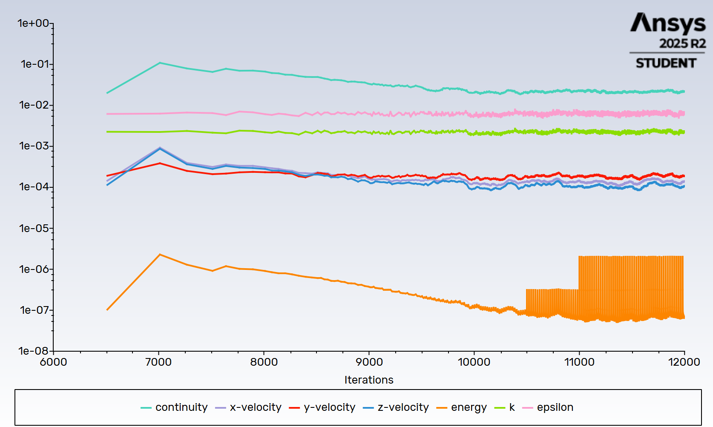

Hybrid Battery Thermal Management System
A detailed transient CFD thermal model of a hybrid 6-cell staggered cylindrical Li-ion battery module featuring passive Phase Change Material (PCM) enclosures and an active forced air-cooling channel. The simulation includes the battery cell cores, conjugate heat transfer interfaces, paraffin-based matrix jackets, transient volumetric heat generation zones, and fluid flow corridors. The model was developed to visualize the internal architecture and operating mechanism of a dual-medium battery thermal management system tracking multiphase melting boundary propagation from 300 K to 314.17 K.




Objective
To design, simulate, and evaluate a hybrid battery thermal management system (HBTMS) using a dual-medium configuration, tracking transient volumetric heat generation, multi-phase melting front boundaries, and convective heat dissipation.
Tech Stack
ANSYS Fluent (2025 R2)
Transient Solver · Enthalpy-Porosity Formulation · Solidification & Melting Model · DesignModeler
Key Learnings
- Enthalpy-porosity liquid volume fraction tracking
- Multi-domain conjugate heat transfer modeling
- Active-passive medium synergy analysis
Technical Implementation
The numerical model simulates 3D transient conjugate heat transfer inside a 6-cell staggered cylindrical module layout. To eliminate mass overheads and arrest localized downwind thermal cascading, the system relies on a distinct dual-medium architecture to split the heat transfer workload.
Passive Medium: Phase Change Material Enclosures
Paraffin-based jackets closely surround each cylindrical core to absorb rapid thermal spikes. The phase transition boundary layer is resolved through the Enthalpy-Porosity Technique, tracking liquid volume fraction across the transitional mushy zone from an ambient baseline of 300 K up to active melting thresholds.
Active Medium: Forced Air Convection Corridor
Forced air currents are driven directly through the cavity channel to sweep the narrow interstitial gaps between the staggered cylinders. This moving stream extracts trapped heat from the outer borders of the low-conductivity PCM layers, preventing thermal saturation and sub-cooling the matrix.
Transient Profile Resolution
Configured high-fidelity solver profiles to observe multi-domain phase changes and interface dynamics sequentially across 630+ timesteps as thermal energy balances out across the module.
The system demonstrates how the integration of Phase Change Material (PCM) and forced air cooling effectively manages heat generation, reducing temperature peaks and improving overall thermal performance.
Engineering Insight
The simulation validates the effectiveness of a hybrid thermal management approach, where forced convection and latent heat absorption work together to suppress localized temperature rise, improve thermal stability, and enable a more compact and efficient system design.
Key Design Considerations:
- Observed Peak Run Temp: 314.17 K
- PCM Dead-Weight Reduction: >50%
- PCM enclosure geometry
- Thermal Gradient Flattening